Swipe or press right to start the presentation - Pinch out or press ESC to see all the slides
Swipe or press down to see additional slides when available (see navigation arrows on the right)
Press F to set fullscreen - Press Alt and click to zoom in or out - Press B to fade to black - Press S for speaker view
Slides made using Slidify with Reveal.js framework
Main thematics of my research
PhD Thesis: 1D physics in carbon peapods
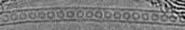 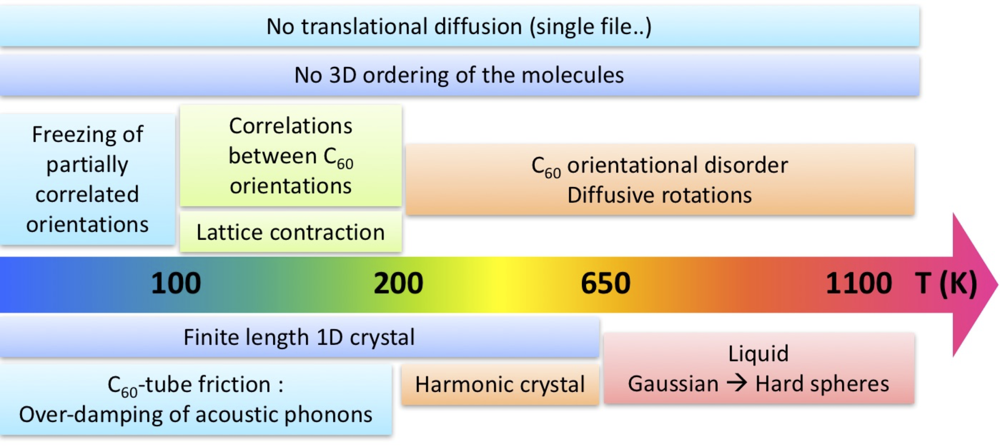
Main thematics of my research
Post-Doc @ MIT: reconstructing molecular models of kerogen


Main thematics of my research
Post-Doc @ MIT: reconstructing molecular models of kerogen
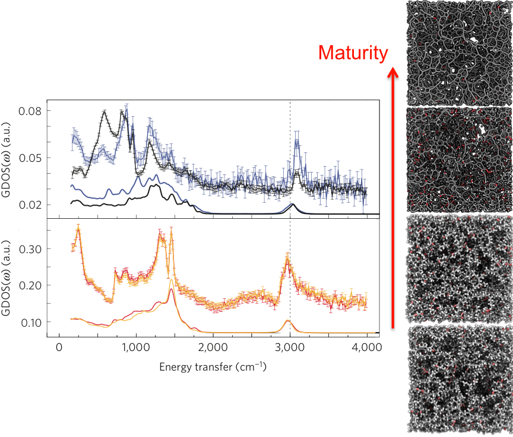
amorphous porous materials
with P. Levitz and B. Coasne
(in preparation)
Main thematics of my research
Post-Doc @ ILM: 1D and 2D nano-objects under pressure

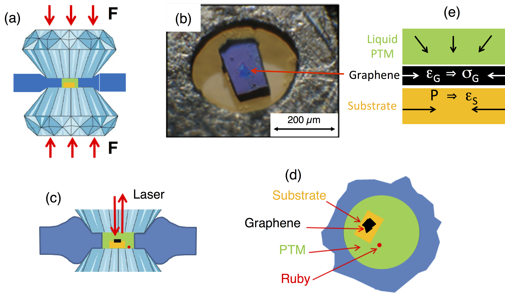

Bousige et al., Nano Lett. (in reviewing process)
Main thematics of my research
Summary
- Structure and dynamics of carbon nanostructures
- Confinement and phase transitions
- Mechanical properties
- Transport in complex media
- Adhesion and friction
- Experimental
- Inelastic Neutron Scattering
- Diffraction (x-rays, neutrons)
- Raman spectroscopy
- High pressures
- Simulations
- Molecular Dynamics
- Monte Carlo
Menu
II - Pinned and unpinned states in carbon peapods:
insights into nanotube super-lubricity
Chapter I
Biaxial strain transfer in supported graphene
Institut Lumière Matière (Lyon)
Exploring strain transfer in supported graphene
Context of strain-tronics with graphene:
Optical and electronic properties can be tuned by the application of strain
\(\Rightarrow\) Applications in electronics, sensors, etc.
In the aim of using graphene (or TMDs) in such devices, one need a reproducible strain production.
Graphene is most of the time deposited on a substrate.
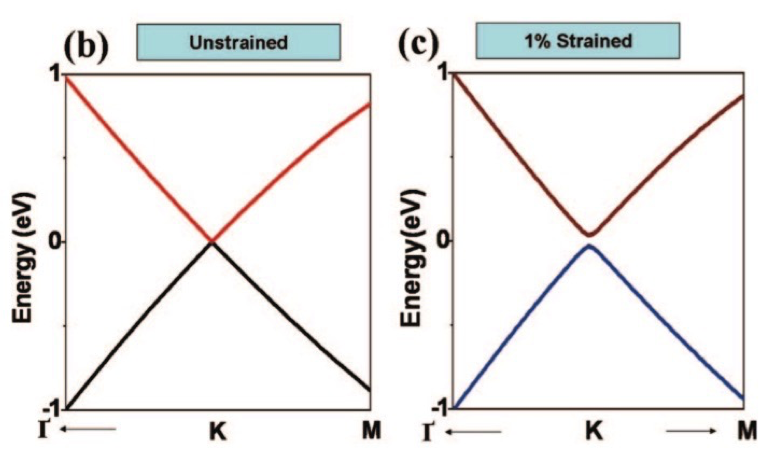
How efficiently is strain transferred?
What are the limits of strain transfer?
Exploring strain transfer in supported graphene
Experimental approach
Evolution of the Raman G-band
Biaxial strain in a Diamond Anvil Cell
Various substrates (Diamond, Sapphire, SiO\(_2\))
- Highly sensitive to in-plane strain
- Compression due to volume reduction of the substrate
- Maximization of the conformation of graphene to its substrate by the application of high pressures in a DAC with alcohol pressure transmitting medium (PTM)
- Various bulk moduli

Exploring strain transfer in supported graphene
Results
| \(\partial\omega_G/\partial P\) | \(\beta_L\) | |
|---|---|---|
| (cm\(^{-1}\)/GPa) | (GPa) | |
| Diamond | $ 4.0\pm0.2$ | \(1329\) |
| Graphite | $ 4.4\pm0.3$ | \(1250\) |
| Sapphire | $ 7.8\pm0.5$ | $ 750$ |
| Copper | $ 9.2\pm0.3$ | $ 420$ |
| SiO\(_2\) | \(10.5\pm0.2\) | $ 114$ |
How do we explain that?
$\Rightarrow$ Pressure is not the good variable
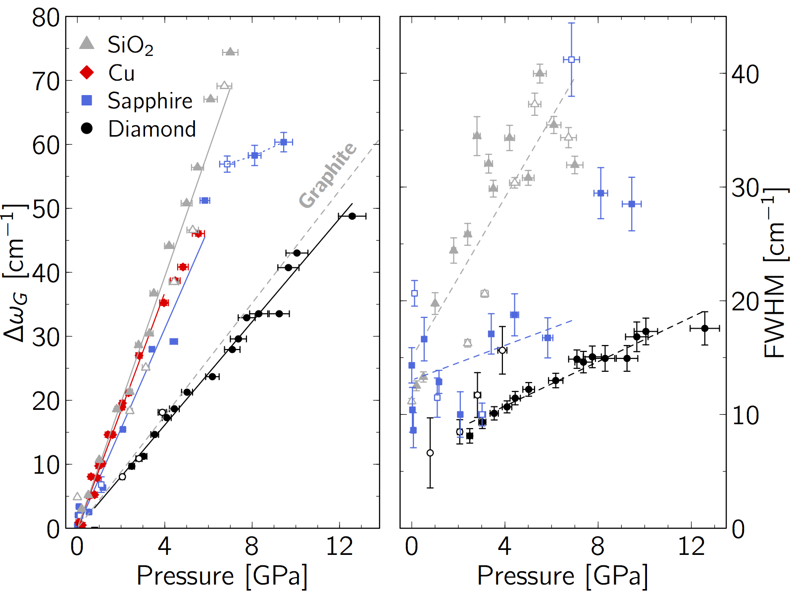
Exploring strain transfer in supported graphene
Renormalization to the relevant physical quantities \(\varepsilon\) and \(\sigma\)
- For 2D materials, Pressure of the PTM and Stress of the material are not equivalent
- Graphite is a 3D material, so $P\Leftrightarrow\sigma$
- For a Raman shift of the deposited graphene corresponds a stress of the graphene flake:$$\sigma_G^S=\Delta\omega_G^S/\Omega_{gr}$$
- The strain ε of the graphene flake and the strain of the substrate can be retrieved through the Birch-Murnaghan equation of states: $$\frac{r}{r_0}=\left(1+\sigma\frac{\beta'}{\beta}\right)^{-1/\beta'}$$
Exploring strain transfer in supported graphene
After renormalization to the relevant physical quantities \(\varepsilon\) and \(\sigma\)
$\varepsilon_G-\varepsilon_S\neq$0
$\Leftrightarrow$
Partial strain transmission
$\varepsilon_G-\varepsilon_S=$0
$\Leftrightarrow$
Total strain transmission
Exploring strain transfer in supported graphene
Quantifying the efficiency of strain transfer
$\varepsilon_S = P/\beta_S$
$\varepsilon_G = \sigma_G/\beta_{ref}$
$\sigma_G = \alpha(\sigma_G)\frac{\beta_{ref}}{\beta_S}P$
with ref=graphite:
$\Omega_{ref}=4.4$ cm$^{-1}$/GPa
$\beta_{ref}=1250$ GPa

Exploring strain transfer in supported graphene
Quantifying the efficiency of strain transfer

Total strain transmission
Partial strain transmissionCreation of a stress field
Where does the energy go?
Defects/tearing- Buckling/slipping/stress field

Exploring strain transfer in supported graphene
Developing a tool to check for strain transfer efficiency
- Ding et al., Nano Lett. (2010):
Piezo-actuators, sandwiched graphene - Androulidakis et al., Sci. Reports (2015):
Deposited graphene, bending substrate - Shin et al., Appl. Phys. Lett. (2016):
Glass blower method (suspended graphene)
Supported Graphene - Conclusions
- Total strain transfer (adhesion) should never be assumed, but carefully checked
- How to check this? Easy tool:
- Total strain transmission: $\frac{\partial\Delta\omega_G}{\partial\varepsilon} = -57\pm2~\text{cm}^{-1}/\%$
- Partial strain transmission:$\frac{\partial\Delta\omega_G}{\partial\varepsilon} > -57\pm2~\text{cm}^{-1}/\%$
- Still need to explore:
- The possible correlation between $\sigma_G^c$ and the percolation of the locally stressed regions
- The role of the substrate roughness and the graphene microstructure
Work in progress: suspended objects
Goals:
- Studying various individual nano-objects at high pressure with Raman or SMS spectroscopies, e.g:
- sp\(^2\)-sp\(^3\) transition in bi-layer graphene at high pressures ($\gtrsim$10 GPa)
- optical absorption of individual nanotube under pressure (SMS)
- you name it...
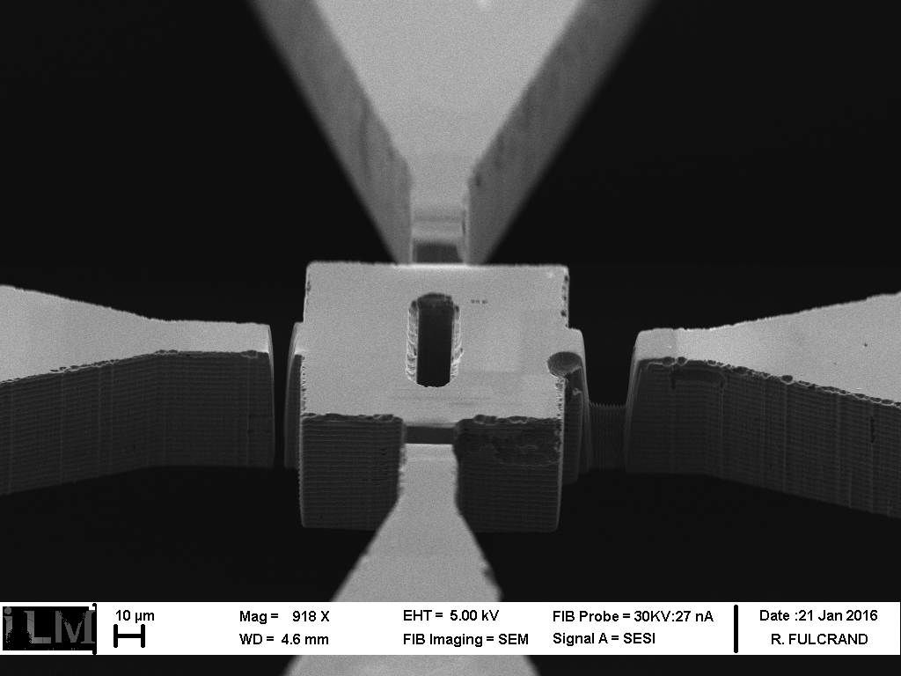
Transferring the substrate
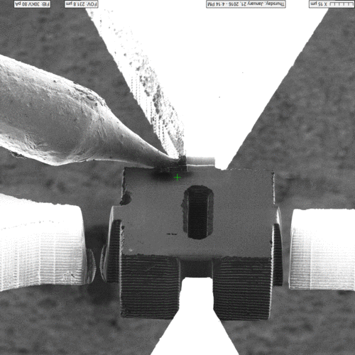
Spatial Modulation Spectroscopy (SMS)
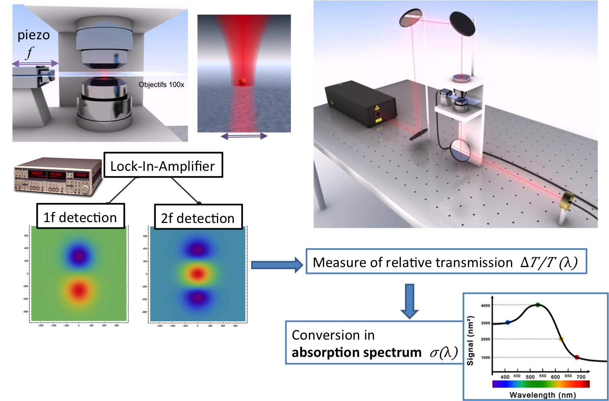
Chapter II
Pinned and unpinned states in carbon peapods:
insights into nanotube super-lubricity
Institut Laue Langevin (Grenoble) and Laboratoire de Physique des Solides (Orsay)
Carbon nano-peapods: a model 1D system
Monomers:
 Polymers:
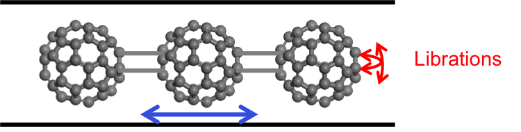
Polymers:
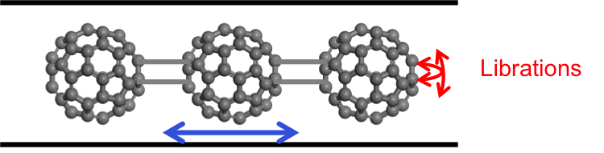
Carbon nano-peapods: a model 1D system
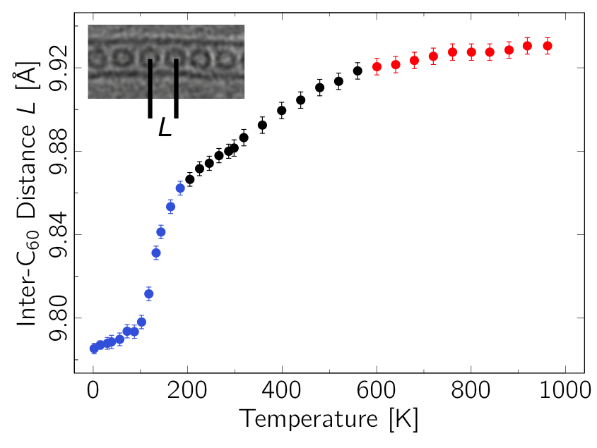
Carbon nano-peapods: a model 1D system
Mid T: Finite size 1D crystal
- Elastic diffusion $\rightarrow$ 1D crystal
- Quasi-elastic diffusion in Mono and Polymers $\rightarrow$ measure speed of sound along C$_{60}$ chains (3.5 km/s)
Bousige et al., PRB 87 (2013) 195438
Elastic nature:


Carbon nano-peapods: a model 1D system
High T: Progressive fusion
- First observation of the fusion of a Takahasi-Gürsey chain
- No elastic diffusion $\Leftrightarrow$ Positionnal and orientationnal disorders
Bousige et al., PRB 87 (2013) 195438
Bousige et al., PRB 86 (2012) 045446
Inelastic nature:


Carbon nano-peapods: a model 1D system
Quick summary of the behavior for T > 300 K
Carbon nano-peapods: a model 1D system
Low temperatures
Carbon nano-peapods: a model 1D system
Rotation-translation coupling and orientationnal ordering
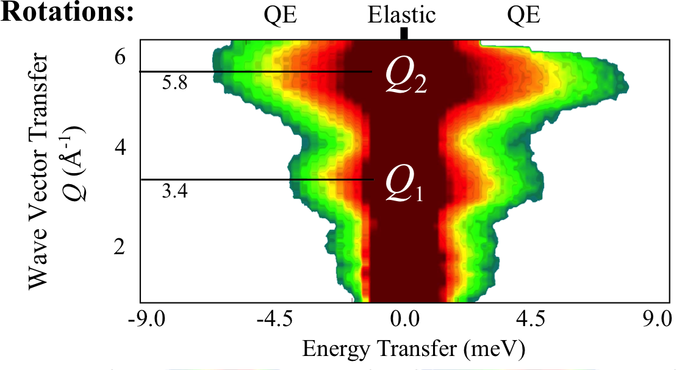
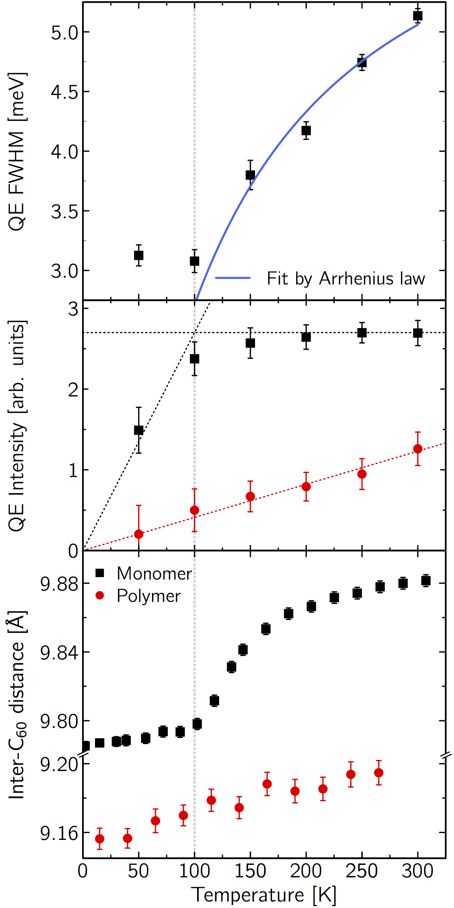
Carbon nano-peapods: a model 1D system
Rotation-translation coupling and orientationnal ordering
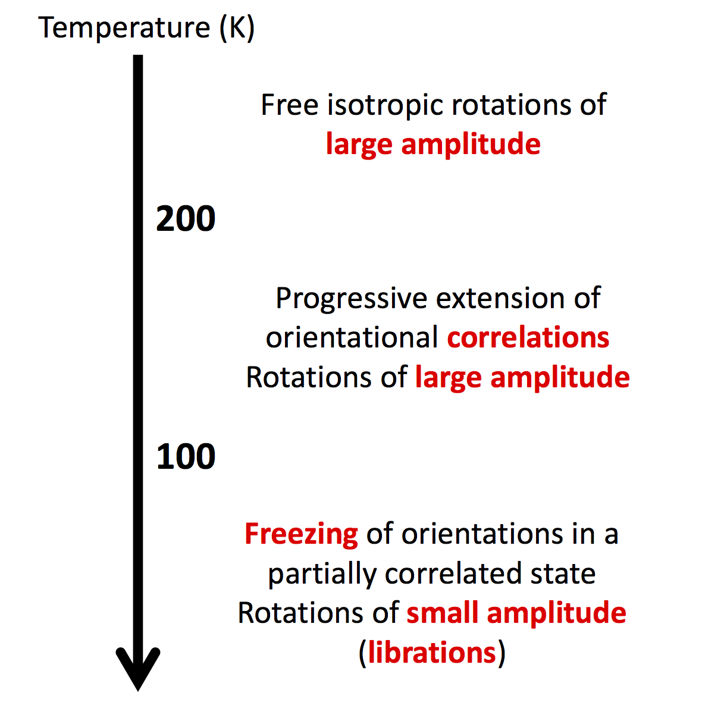
Carbon nano-peapods: a model 1D system... for friction
Let's have a look at the translations
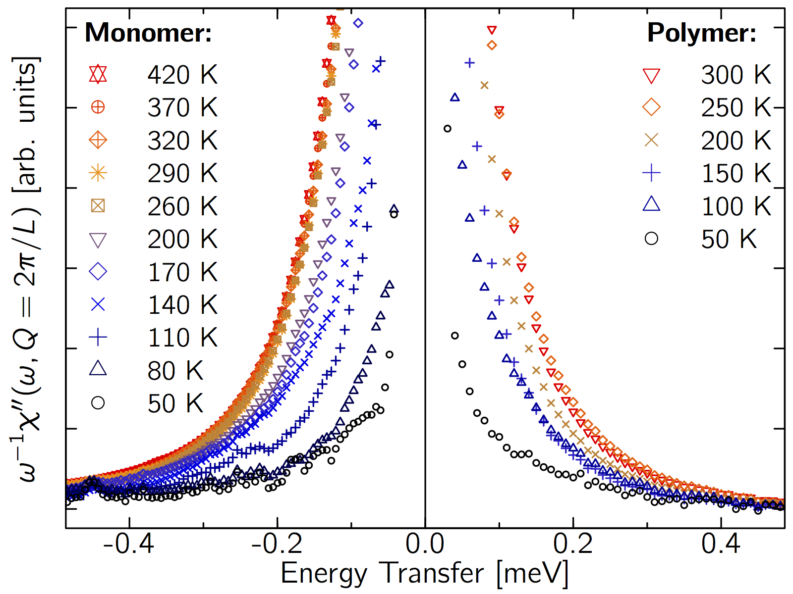
Carbon nano-peapods: a model 1D system... for friction
Let's have a look at the translations
In the case of a perfectly plane buckypaper and a TAS, one can show: \[\frac{S(Q,\omega)}{k_BT} \propto \frac{NF^2(Q)}{4\hbar mc^2}\int\limits_{0}^{2\pi}\text{d}\phi_t\frac{(Q\cos\phi_t)^2}{\sin^2\left(\frac{Q L}{2}\cos\phi_t\right)}\times\] \[\quad\quad\quad\quad\quad\delta\left(\omega \pm \frac{2c}{L}\left|\sin\left(\frac{Q L}{2}\cos\phi_t\right)\right|\right)\]
Carbon nano-peapods: a model 1D system... for friction
Let's have a look at the translations
In the case of a perfectly plane buckypaper and a TAS, one can show:
\[\frac{S(Q,\omega)}{k_BT} \propto \frac{NF^2(Q)}{4\hbar mc^2}\int\limits_{0}^{2\pi}\text{d}\phi_t\frac{(Q\cos\phi_t)^2}{\sin^2\left(\frac{Q L}{2}\cos\phi_t\right)}\times\]
\[\quad\quad\quad\quad\quad\delta\left(\omega \pm \frac{2c}{L}\left|\sin\left(\frac{Q L}{2}\cos\phi_t\right)\right|\right)\]
- With an experimental resolution
Carbon nano-peapods: a model 1D system... for friction
Let's have a look at the translations
In the case of a perfectly plane buckypaper and a TAS, one can show:
\[\frac{S(Q,\omega)}{k_BT} \propto \frac{NF^2(Q)}{4\hbar mc^2}\int\limits_{0}^{2\pi}\text{d}\phi_t\frac{(Q\cos\phi_t)^2}{\sin^2\left(\frac{Q L}{2}\cos\phi_t\right)}\times\]
\[\quad\quad\quad\quad\quad\delta\left(\omega \pm \frac{2c}{L}\left|\sin\left(\frac{Q L}{2}\cos\phi_t\right)\right|\right)\]
- With an experimental resolution
- And a damping parameter \(\gamma\)
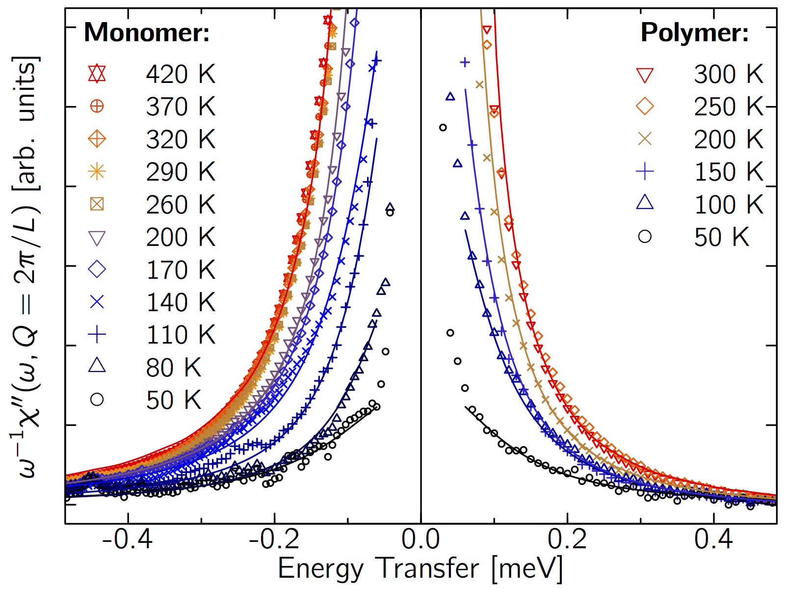
Carbon nano-peapods: a model 1D system... for friction
Appearance of friction at low temperatures
Fit by a power law :
$$ \left\lbrace \begin{array}{rll} \gamma=&0 &\text{ for } T > T_C\\ \gamma=&\left(T_C-T\right)^{\chi}&\text{ for } T \le T_C \end{array}\right. $$
${T_C}=230$ K and $\chi=0.75$
Now : = 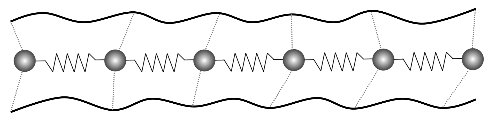
No 3D ordering
Carbon nano-peapods: a model 1D system... for friction
Summary
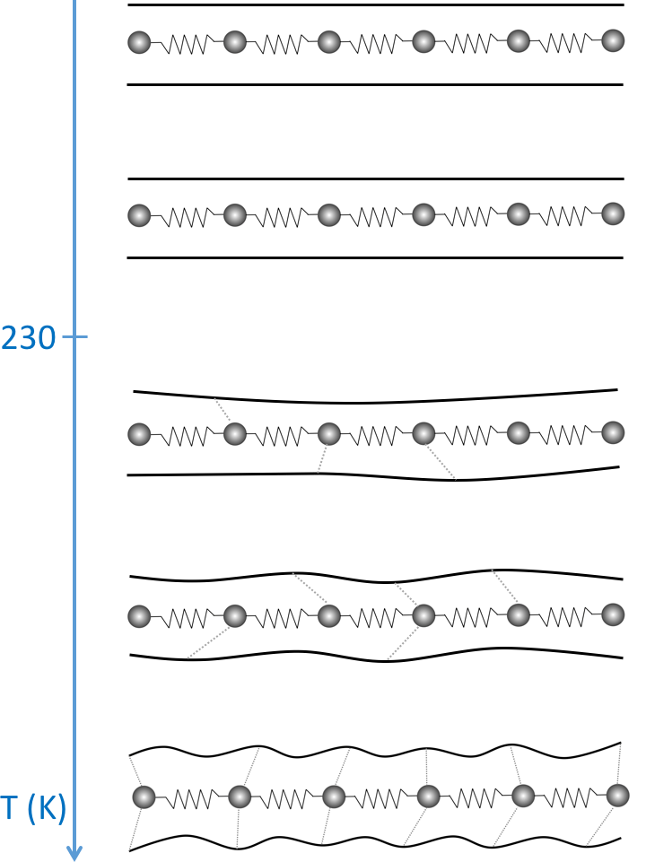
- Link to super-lubricity observed for water flowing through CNT?
\(T\le T_C\) : Friction - Transition by breaking of analyticity?
(Aubry transition in a Frenkel-Kontorova model) - Role of the RBM?
- Role of the longitudinal CNT modes as in water diffusion?
\(\Rightarrow\) MD simulations still running...
Thanks!
ILL and LPS
Pascale Launois
Stéphane Rols
ILM
Alfonso san Miguel
Denis Machon